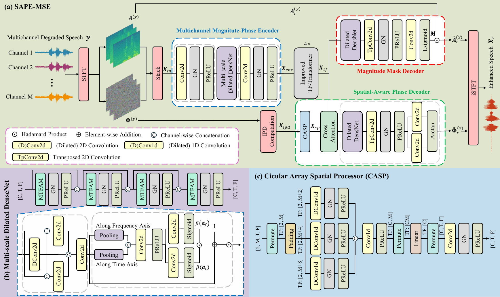

| Module | Sub-module | Configuration | Input shape | Output shape |
|---|---|---|---|---|
| Multichannel Magnitude-Phase Encoder |
Convolutional block 1 | Conv2D (2M → C) → GN (g=8) → PReLU (M =8, C = 64) | [B, 2M, T, F] | [B, C, T, F] |
| Multi-scale Dilated DenseNet (depth=4) |
MTFAM → GN (g=8) → PReLU | [B, C, T, F] | [B, C, T, F] | |
| Convolutional block 2 | Conv2D (C → C, k=(1×3), s=(1×2), p=(0,1)) → GN (g=8) → PReLU | [B, C, T, F] | [B, C, T, F/2] | |
| MTFAM | Multi-scale Convolutional Block (d=dilation rate) |
Branch 1 (Global): Pad (1,1,d,0) Dilated Conv2D (Cin → C/2, k=(2×3), d=(d,1)) → GN (g=8) → PReLU |
[B, Cin, T, F] | [B, C/2, T, F] |
|
Branch 2 (Time refinement): Concat (input, Global) → Pad (2,2,0,0) Conv2D ((Cin + C/2) → C/4, k=(1×5)) → GN (g=8) → PReLU |
[B, (Cin + C/2), T, F] | [B, C/4, T, F] | ||
|
Branch 3 (Freq refinement): Concat (x, Global) → Pad (0,0,1,0) Conv2D ((Cin + C/2) → C/4, k=(2×1)) → GN (g=8) → PReLU |
[B, (Cin + C/2), T, F] | [B, C/4, T, F] | ||
|
Fusion: Concat (Global, Time refinement, Freq refinement) → Conv2D (C → C) |
[B, C, T, F] | [B, C, T, F] | ||
| TF Coordinate Attention |
Coord-Pooling: AvgPool-F → [B,C,T,1], AvgPool-T → [B,C,1,F].premute Concat (T+F) → Conv2D (C → C/4) → PReLU Split → Conv2D (C/4 → C) × 2 (T/F branches) Sigmoid Residual: x · (1 + at · af) |
[B, C, T, F] | [B, C, T, F] | |
| Improved TF-Transformers (depth=4) |
Time Path |
Reshape: [B, C, T, F] → [B·F, T, C] Improved GRU-Transformer Block (d=C, heads=4) |
[B, C, T, F] | [B·F, T, C] |
| Freq Path |
Reshape: [B·F, T, C] → [B·T, F, C] Improved GRU-Transformer Block (d=C, heads=4) |
[B·F, T, C] | [B·T, F, C] | |
| Improved GRU-Transformer Block |
FFN: RMSNorm → BiGRU (C → 2C, bidirectional) → SiLU → Linear (4C → C) + Residual (×0.5) Multi-Head Attention: RMSNorm → MHA (heads=4) → Residual FFN: RMSNorm → BiGRU (C → 2C, bidirectional) → SiLU → Linear (4C → C) + Residual (×0.5) RMSNorm |
[B, Seq, C] | [B, Seq, C] | |
| Decoder | Magnitude Mask Decoder (d denotes the dilation rate) |
Dilated DenseNet (depth=4) : Pad=(1,1,d,0) Conv2D(Cin → C, k=(2×3), d=(d,1)) → GN(g=8) → PReLU |
[B, C, T, F/2] | [B, C, T, F/2] |
|
TransposedConv2D (C → C, k=(1×3), r=2) → GN(g=8) → PReLU |
[B, C, T, F/2] | [B, C, T, F] | ||
| Conv2D (C → 1, k=(1×2)) → GN(g=8) → PReLU → Squeeze | [B, 1, T, F] | [B, F, T] | ||
| Learnable Sigmoid2D | [B, F, T] | [B, F, T] | ||
| Spatial-Aware Phase Decoder (d denotes the dilation rate) |
Circular Array Spatial Processor |
[B, 2M, T, F] | [B, C, T, F/2] | |
|
Dilated DenseNet (depth=4) : Pad=(1,1,d,0) Conv2D(Cin → C, k=(2×3), d=(d,1)) → GN(g=8) → PReLU |
[B, C, T, F/2] | [B, C, T, F/2] | ||
| TransposedConv2D (C → C, k=(1×3), r=2) → GN(g=8) → PReLU | [B, C, T, F/2] | [B, C, T, F] | ||
|
Phase Heads: Conv2D (C → 1, k=(1×2)) (Real) & Conv2D (C → 1, k=(1×2)) (Imag) → Squeeze |
[B, C, T, F] | [B, T, F] ×2 | ||
|
Phase Reconstruction: atan2(Imag, Real) |
[B, T, F] ×2 | [B, T, F] | ||
| Circular Spatial Encoder | Input Reshape & Stack |
IPD: stack(sin, cos) → reshape [B·T·F, 2, M] |
[B, 2M, T, F] | [B·T·F, 2, M] |
| Multi-scale Circular Conv (d denotes the dilation rate) |
DilatedConv1D (2 → C, k=3, d=1) + circular padding + GN(4) + PReLU DilatedConv1D (2 → C, k=3, d=2) + circular padding + GN(4) + PReLU DilatedConv1D (2 → C, k=3, d=4) + circular padding + GN(4) + PReLU |
[B·T·F, 2, M] | [B·T·F, 3C, M] | |
| Feature Fusion | Concat → Conv1D(3C → 4C) → PReLU | [B·T·F, 3C, M] | [B·T·F, 4C, M] | |
| Global Mapping | Flatten → Linear(4C·M → C) | [B·T·F, 4C·M] | [B·T·F, C] | |
| Reshape + Downsample |
Reshape → [B, C, T, F] Conv2D(C→C, k=(1×3), s=(1×2), p=(0,1)) → GN(8) → PReLU |
[B, C, T, F] | [B, C, T, F/2] |